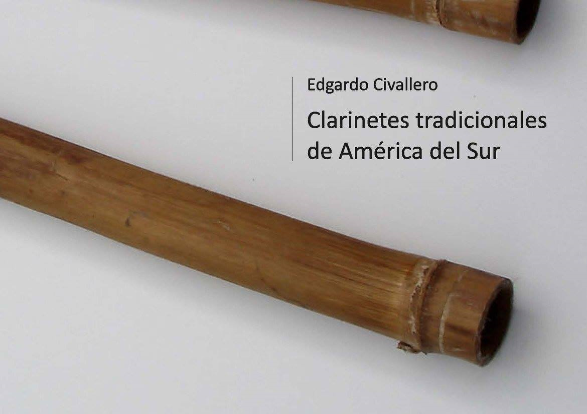
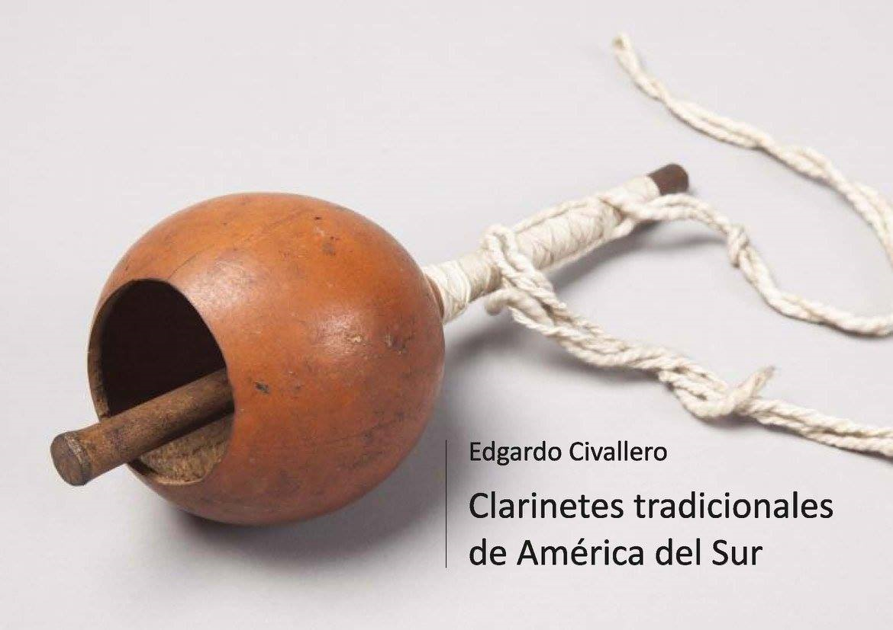
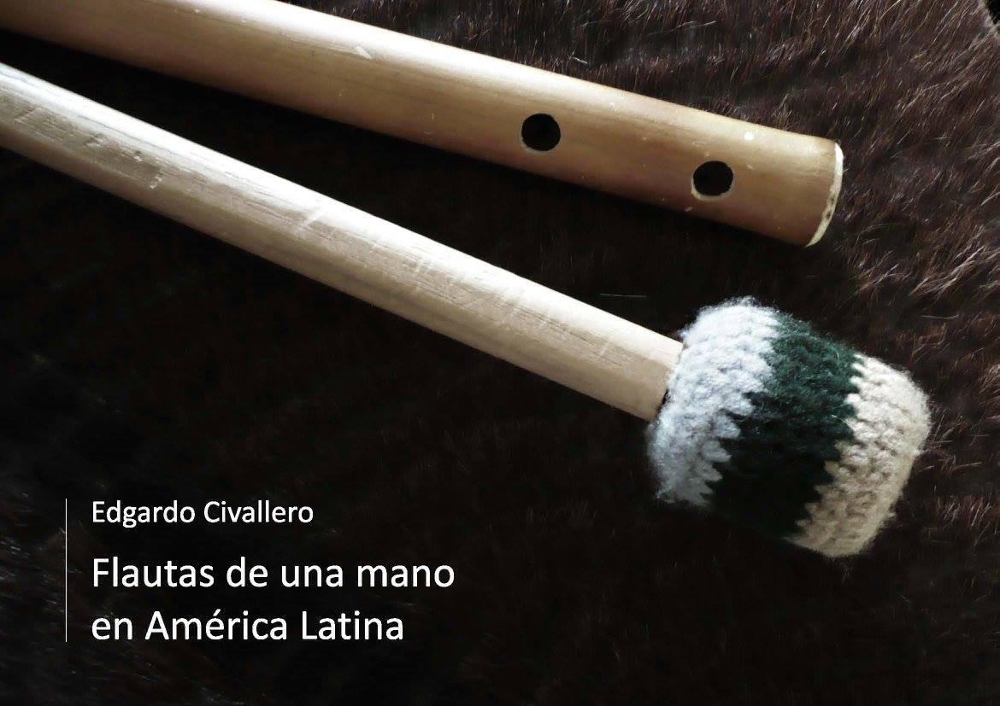

Libros digitales sobre música
Inicio > Publicaciones y plataformas > Libros digitales sobre música
Los siguientes libros, publicados en formato digital (.pdf), presentan investigaciones bibliográficas originales relacionadas con organología y etnomusicología, y se distribuyen para su lectura de forma gratuita, de acuerdo a las políticas de copyright de Instrumentarium.

01. Introducción a las flautas de Pan
Guía ilustrada que pretende proporcionar, de forma concisa, un acercamiento inicial a las flautas de Pan y a las diferentes formas que asumió a través de la historia humana y a lo largo y ancho de la geografía mundial. Cada capítulo abarca todas las flautas de un continente organizadas en una secuencia cronológica.
[Descarga].
02. Las largas trompetas de los Andes
Guía sucinta que introduce al lector en la localización, la historia, la estructura y el uso de unos aerófonos fascinantes, que incluyen desde la bocina de Ecuador hasta la trutruka y el ñolkiñ de los Mapuche de la Patagonia, pasando por el clarín de Cajamarca, el yungor de Ayacucho y el huarajo (Perú), el tira-tira de Potosí y la caña de Tarija (Bolivia), el clarín atacameño (Chile) y el erque, caña o corneta del noroeste de Argentina.
[Descarga].

03. La kamacheña
Una breve introducción a la localización, la estructura y el uso de un aerófono andino poco conocido (quenilla, flautilla de Pascua, flautilla chaquense, quena, flautilla jujeña) interpretado en el sur de Bolivia (departamento de Tarija) y el noroeste de Argentina (provincias de Salta y Jujuy): una flauta de una mano, de la familia de las quenas, que se ejecuta con el vibrante acompañamiento de la caja, y en cuyas notas se mantienen repertorios antiquísimos.
[Descarga].
04. Flautas de Pan de las tierras bajas de América del Sur
Introducción al complejo mundo de las flautas de Pan del Chaco, la Amazonia y la Orinoquia. Incluye, entre muchas otras, las suduchu de los Ye'kuana, las peruma de los Baniwa, las kalisu-ot de los Puinave, las iiwa de los Piapoco, las jivabürrü de los Guahibo, las tzaqui pekuarsibërë de los Cuiba, las jok'ku de los Yukpa, las tarusuba de los Desano, las peduba de los Cubeo, las emi pe'dú de los Tukano, las heheh de los Hupdë, las wewo de los Barasana, las calabapio morere de los Amorúa, las jetukachapa de los Coreguaje, las reribakui de los Witoto, las ari'yarihua de los Siona, las tokeemie de los Waunana, las siru de los Epera, las púnkiri de los Ika, las carisu de los Wanano, las katetiri de los Irantxe, las tsidupu de los Xavante, las yapejatekana de los Waura, las erewepipo de los Arara, las cheku de los Tikuna, las oruubi de los Ocaina, las chiiyóró de los Bora, y las hetupe de los Maijuna.
[Descarga].
05. El erquencho
Una breve introducción a un particular clarinete idioglótico (erquencho, erkencho, erque, erke, irqi) interpretado en el sur de Bolivia y el noroeste de Argentina, compuesto por un pabellón y una lengüeta de caña, y que conserva en sus notas un repertorio tritónico generalmente andino de raíces prehispánicas y se acompaña con la infaltable caja.
[Descarga].

06. Los bajones
Reseña sobre la localización, la estructura y el uso de un curioso aerófono indígena, de enormes trompetas múltiples hechas de corteza arrollada, empleado en las tierras bajas de Bolivia y que, por motivos históricos, se convirtió en uno de los elementos más particulares del conjunto que interpretó música barroca en las misiones jesuíticas.
[Descarga].
07. Arcos musicales de América del Sur
Breve guía de la naturaleza y las características de construcción y uso de una serie de sencillos cordófonos, de origen indígena y africano, distribuidos prácticamente en toda América del Sur, con una larga historia y una íntima asociación a la música personal e íntima, a la comunicación con los espíritus y a los rituales de enamoramiento.
[Descarga].
08. Una aproximación a las bandas de sikuris
Una introducción, muy breve y básica, a las características principales del siku, zampoña o flauta de Pan del altiplano meridional andino, y a las de las bandas de sikuris, los populares conjuntos de intérpretes de este aerófono. El texto aborda la estructura básica de los aerófonos, su historia, y los detalles sobre su interpretación en forma de "diálogo" a nivel comunitario.
[Descarga].

09. Flautas de Pan de Europa
Guía que se aproxima, desde una perspectiva bibliográfica, histórica y artística, al mundo de las flautas de Pan europeas, tanto a las utilizadas en el ámbito tradicional como en los espacios cultos. La obra explora estos aerófonos durante la Prehistoria y la Edad de Hierro, en la antigua Grecia, Etruria y la Roma clásica, entre los pueblos de Galia y Britania y durante la Edad Media. Realiza un repaso a la presencia del instrumento durante el Renacimiento y la Edad Moderna, y busca sus expresiones actuales desde los Urales a la costa del Atlántico, y desde el Ártico al Mediterráneo.
[Descarga].

10. Flautas de Pan del oriente boliviano
Una visión general sobre las "otras" zampoñas de Bolivia. En aquel país, las flautas de Pan más conocidas son las andinas (p.e. los célebres sikus), un universo organológico que ciertamente eclipsa al puñado de valiosos instrumentos de las tierras bajas de oriente. La obra se acerca a los aerófonos de pueblos indígenas como los Moré, los Canichana, los Caviña, los Mosetén, los Mojeño, los Yuracare, los Chiquitano, los Pauserna y los Chacobo, entre otros.
[Descarga].
11. Caparazones de tortuga en la música tradicional latinoamericana
Una concisa introducción al uso musical del caparazón de distintos quelonios a lo largo de América Latina a través de los tiempos. El texto describe instrumentos empleados, entre muchos otros, por los Wayampi, los Waiwai, los Karajá, los Emberá, los Guaymí, los Kuna, los Garífuna, los Miskito, los Tawahka, los Maya y Mexica clásicos, los Chontal, los Tzeltal, los Huave, los Nahua, los Huasteca, los Tepehua y los Totonaca.
[Descarga].

12. Introducción a las tarkas
Una concisa aproximación a datos esenciales sobre el tradicional aerófono de madera del altiplano meridional andino. Revisa su estructura y construcción, sus tropas tradicionales, su historia, su distribución, su empleo y la particular naturaleza de su sonido. Establece las dos formas más tradicionales del instrumento y describe las principales tropas, incluyendo las cuatro clásicas: potosina, salinas, curaguara o kurahuara, y ollara o ullara.
[Descarga].
13. Cráneos animales en la música sudamericana
Datos esenciales sobre los instrumentos musicales sudamericanos realizados con cráneos animales (sobre todo de venado y armadillo). Desde flautas globulares a pabellones de trompetas y maracas, el texto realiza un conciso recorrido por la geografía sonora y organológica de las sociedades originarias de América del Sur, recuperando estos curiosos ejemplares óseos.
[Descarga].
14. "Violines" tradicionales de América Latina. Parte 01: Argentina y Paraguay
Introducción al mundo de los instrumentos de cuerda frotada tradicionales de América Latina. En esta primera parte se incluyen el nwiké de los Qom y los Pi'laqá, el rabé de los Mbyá, el turumí de los Ava y los Chané, el violín criollo de Argentina y los rabeles (p.e. el hathpang) de Paraguay.
[Descarga].

15. Yanawan yuraqwan. Instrumentos musicales andinos en blanco y negro
Álbum fotográfico que presenta, en una selección de 15 imágenes en blanco y negro acompañadas de breves reseñas, algunos de los instrumentos musicales tradicionales andinos más interesantes: quenas, pusi p'ias, sikus, toyos, rondadores, ocarinas, charangos, pingullos, pinkillos, waka pinkillos, waylla qhepas y wank'aras.
[Descarga].

16. Clarinetes tradicionales de América del Sur. Parte 01: Colombia, Venezuela y las Guayanas
Somero acercamiento a los instrumentos de lengüeta simple construidos e interpretados en América del Sur, incluyendo, entre otros, los clarinetes tule de los Wayampi, isimói de los Warao, sawawa y ontorroyoi de los Wayuu, y timi y taparuchka de los Yukpa, junto a la famosa caña de millo colombiana.
[Descarga].

17. Las raíces africanas de la caña de millo colombiana
Breve revisión de la historia, la construcción, las características y los posibles orígenes de la caña de millo de la costa Caribe colombiana, enfatizando las raíces africanas del instrumento.
[Descarga].

18. Clarinetes tradicionales de América del Sur. Parte 02: Brasil y Chaco
Somero acercamiento a los instrumentos de lengüeta simple construidos e interpretados en América del Sur, incluyendo, entre otros, los clarinetes tule del Amazonas (Bororo, Waujá, Asurini...) y los clarinetes cortos del Chaco.
[Descarga].
19. Las flautas de cabeza de cera de América Latina
Una introducción a los aerófonos de aeroducto externo y cabezal de cera. Incluye las kuizi de los Kogui, las watko de los Wiwa, las charo de los Ika, los carrizos de Atánquez, las gaitas de la costa Atlántica colombiana, la atunja, la juk'ka y la shwappera de los Yukpa, la tolo y la supe de los Kuna, la flauta de carrizo de Tabasco, la nipil'ji de los Pame, la pakaab chul de los Tének y las flautas de los Nahua.
[Descarga].
20. Instrumentos musicales del río Guaporé
Una traducción adaptada y revisada del trabajo del etnólogo alemán E. H. Snethlage Musikinstrumente der Indianer des Guaporégebietes¸ publicado en Berlín en 1939, y que describe los instrumentos musicales de los pueblos indígenas del área del Guaporé, incluyendo a los Kumaná, Pauserna, Chiquitano, Moré, Itoreauhip, Abitana, Jabutí, Arikapú, Makurap, Wajurú, Aruá, Tuparí, Amniapä-Mampiapä y Guaratägaja.
[Descarga].
21. "Violines" tradicionales de América Latina. Parte 02: Chile y Bolivia
Introducción al mundo de los instrumentos de cuerda frotada tradicionales de América Latina. En esta segunda parte se incluyen el violín y el rabel usados en la música tradicional de Chile, los distintos violines interpretados en las tierras bajas del oriente boliviano (incluyendo los de los pueblos Guarayo, Mosetén, Chiquitano y Mojeño), y los violines de los Andes de Bolivia.
[Descarga].

22. Silbatos tradicionales de los Andes
Un acercamiento a una familia de aerófonos andinos, las flautas longitudinales, entre cuyos miembros se incluyen la flauta de los "bailes chinos" de Chile, la pifilka de los Mapuche de la Patagonia, el jant'arki del sur de Bolivia y la flauta tuquru de la danza de los uxusiris del Titicaca.
[Descarga].

23. Instrumentos musicales de los Ava
Resumida descripción de los elementos sonoros utilizados por el pueblo Ava, sociedad de habla guaraní que habita en las tierras bajas del este de Bolivia y el noroeste de Argentina. Entre ellos se incluyen los tambores angúa y numerosas flautas mímby, así como el curioso violín turúmi.
[Descarga].
24. Instrumentos musicales de los Chiquitano
Introducción breve a los elementos musicales tradicionales empleados en la actualidad por el pueblo Chiquitano, sociedad originaria de las tierras bajas del oriente de Bolivia y el Mato Grosso brasileño. Se incluyen un par de flautas traveseras, una flauta vertical, dos tipos de flautas de Pan, una bocina, el bombo y el tamboril.
[Descarga].

25. Flautas de una mano en América Latina. Parte 01
Concisa aproximación a las flautas verticales de tres orificios presentes, en la actualidad, en el Norte Grande de Chile, en el noroeste argentino y el sureste de Bolivia, y en el altiplano meridional andino, en el territorio de los Aymara. Incluye la flauta del Baile del Torito, la kamacheña, el waka-pinkillo, el liku y el pinkillo camata, entre otros aerófonos.
[Descarga].
26. Los parientes africanos de la banda mocha del Chota
Somera descripción de cómo surge y cuáles son los componentes de la expresión musical afro-ecuatoriana conocida como "banda mocha", originaria del valle del Chota, en las estribaciones andinas del norte de Ecuador. Se rastrea asimismo el uso del instrumento más característico de este tipo de bandas ―la bocina de calabaza― en África central y oriental.
[Descarga].
27. Quenas: un acercamiento inicial
Aproximación genérica al mundo de las flautas verticales de muesca de los Andes: un tipo de instrumento con siglos de historia, una tradición viva muy rica a lo largo de toda la cordillera, y una difusión internacional, al haberse convertido en la "flauta andina" por excelencia.
[Descarga].

28. Pinkillos: un acercamiento inicial
Aproximación muy genérica al mundo de las flautas verticales de pico de los Andes: desde las pequeñas flautas de caña interpretadas con una sola mano en Ecuador hasta los enormes pinkuyllus de madera de los Andes peruanos o los mohoseños del altiplano boliviano.
[Descarga].
29. Flautas traversas de los Andes
Recoge los más importantes aerófonos de esta clase interpretados a lo largo y ancho de la cordillera andina: desde la kina de los Mapuche a las muchas variantes de flauta interpretadas por las bandas indígenas y mestizas de Colombia, pasando por los pitos y pífanos del altiplano y los Andes centrales.
[Descarga].
30. Flautas dobles de América del Sur
Un acercamiento a los pocos ejemplos de este tipo de aerófono presentes en el continente, desde la dulzaina de Ecuador hasta el marimacho de Bolivia, pasando por las gaitas del norte y el centro de los Andes peruanos.
[Descarga].